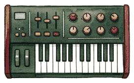

MUSHROOM HOUSE 🍄 STUDIO / AUDIO LAB
Audio Narrative_
Explore stories and musical scenes across interchangeable audio-library repositories.

MUSHROOM HOUSE 🍄 STUDIO / AUDIO LAB
Explore stories and musical scenes across interchangeable audio-library repositories.
